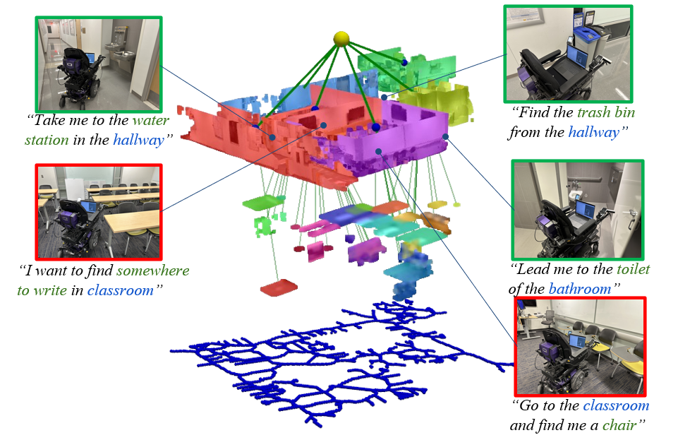
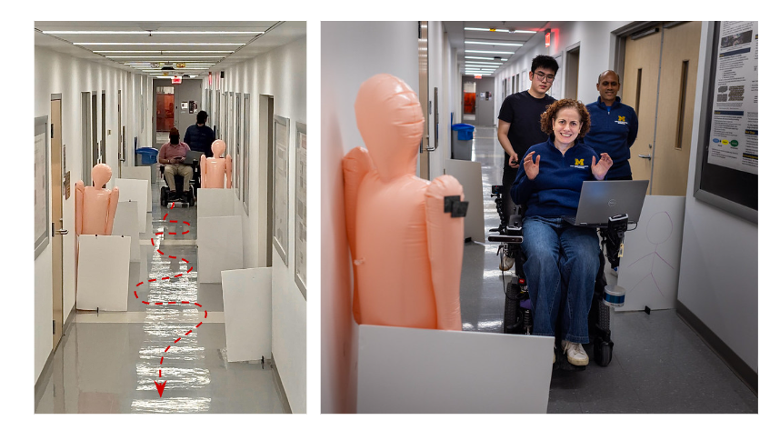
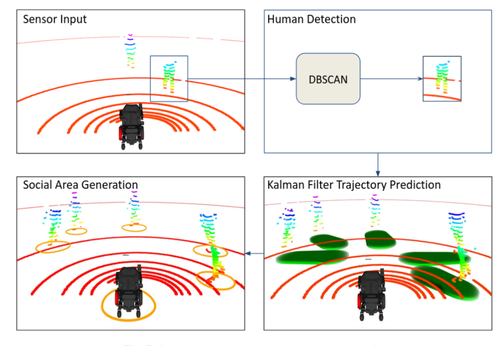

|
Qianwei(Robin) Wang 王乾玮 I am a senior student majoring in Computer Science at the University of Michigan, Ann Arbor. Since 2023, I’ve worked with Dr. Yifan Xu (advised by Prof. Vineet R. Kamat and Prof. Carol C. Menassa); in Summer 2024 I worked with Prof. Dmitry Berenson; and I’m currently at CMU with Dr. Bowen Li, Dr. Yaqi Xie (advised by Prof. Katia Sycara). |
{kind=link}
|
|
ResearchMy research interests include Decision Making in Robotic and Human-Robot Interaction.I want to build algorithms and robots closely connected to people’s everyday lives. |

|
OVAMOS: A Framework for Open-Vocabulary Multi-Object Search in
Unknown Environments
Qianwei Wang, Yifan Xu, Vineet Kamat, Carol Menassa, AAAI(under review), 2026 , ICRA FMNS(ws), 2025 / arXiv A model-based framework designed for robust object search in real world. |
|
 |
Point2Graph: An End-to-end Point Cloud-based 3D Open-Vocabulary Scene Graph for Robot Navigation
Yifan Xu, Ziming Luo*, Qianwei Wang*, Vineet Kamat, Carol Menassa, ICRA, 2025 project page / arXiv An end-to-end framework for generating the scene graph from point cloud directly. |
|
 |
CoNav Chair: Development and Evaluation of a Shared Control-based
Wheelchair for the Built Environment
Yifan Xu, Qianwei Wang, Jordan Lillie Vineet Kamat, Carol Menassa, Clive D’Souza IEEE Transactions on Human-Machine Systems(under review), 2025 / arXiv The CoNav system demonstrated acceptable safety and performance laying the foundation for subsequent usability testing with people with disabilities. |
|
 |
Socially-Aware Shared Control Navigation for Assistive Mobile Robots in the
Built Environment"
Yifan Xu, Qianwei Wang, Vineet Kamat, Carol Menassa, JCCE(Journal of Comupting in Civil Engineering), 2025 / arXiv A Socially-aware Shared Control-based Model Predictive Control with Dynamic Control Barrier Function (SS-MPC-DCBF) to adjust movements in real-time, integrating user preferences for safer, more autonomous navigation |